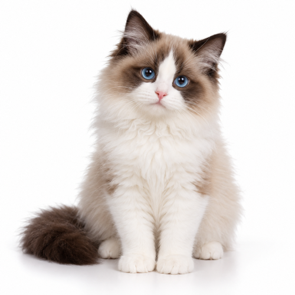
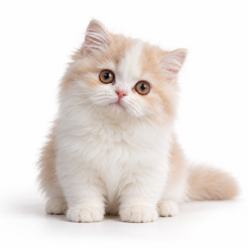
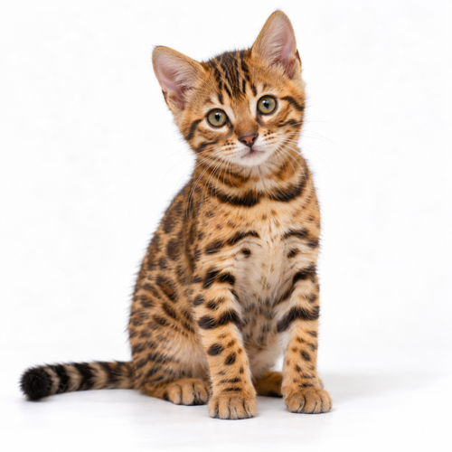
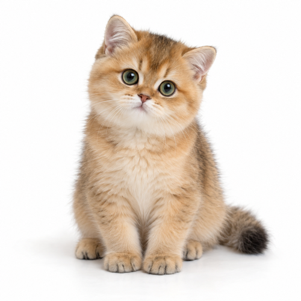
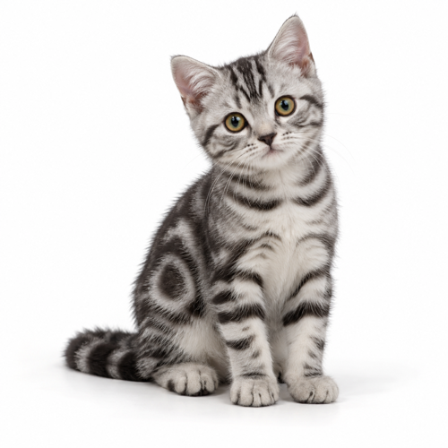
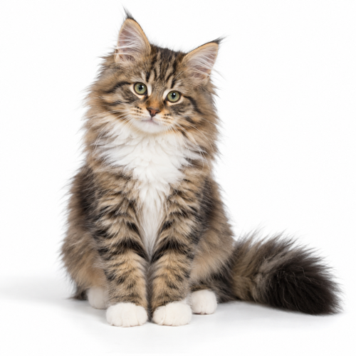

你把三个环都合上了。我戴了帽子庆祝，你可能没看见。
从十二只小猫里带一只回家，给它起个名字。它饿了，是你该吃饭了；你动，它也动；它睡了，你也该睡了。
早。我醒了，你呢？
它不设闹钟，只是醒了就来找你。抬腕看一眼手表，它就在那儿。
到点了。我饿了，你也该吃饭了。
点一下告诉它你在吃，它也跟着吃。两顿饭之间它会口渴，那是在提醒你该喝水了。
你跑我也跑。我腿短，按步数算我赢。
经你允许，它读取「健康」里的步数和锻炼时间。每走 2000 步，它多一条小鱼干。
你把三个环都合上了。我戴了帽子庆祝，你可能没看见。
你坐着不动心跳却很快，它会过来问问你。
我要睡了。你也该睡了。
说晚安，它就蜷起来睡。早上醒了，它会来叫你。
它要的不多。只是整天都在：在你口袋里的手机上，也在你手腕上的表上。
 在手腕上
在手腕上Apple Watch 上抬腕就能看到它。按住摸它，转动数码表冠逗它，点一下回应它的提醒。iPhone 和手表保持同步。
 跟着你的一天过
跟着你的一天过吃饭、喝水、睡觉、起床。它提醒你的方式和猫一样：自己先饿。
 你动，它也动
你动，它也动「健康」里的步数、锻炼、心率和圆环。你去跑步，它跟着一起运动。
 会回话，但话不多
会回话，但话不多跟它讲讲你的一天，它用自己的脾气、用你说的语言回你。回得短，因为它是猫。
 写日记
写日记每天一句，写的是你真实过的这一天：走了多少步、一起吃了几顿饭、你摸了它几次。
 什么都不拿走
什么都不拿走没有账号，没有广告，没有跟踪。日记和健康数据不会离开你的设备。


抬起手腕它就在：在织毛线，在碗边等你，或者睡着了。摸它、逗它、回应它，都不用掏手机。
跟它讲讲你的一天，它用自己的脾气、用你说的语言回你。它回得短，因为它是猫。
年糕 · 在跟你一起歇着它拿爪子捂住了脸经你同意后，回答由 AI 语言模型来写；不同意也没关系，它用手机里的简单规则回你，你写的内容不会离开手机。
你把三个环都合上了。我戴了帽子庆祝，你可能没看见。
你走了 9,412 步。我腿短，在心里跟完了全程。
三顿都是一起吃的。今天是好日子。

第一天。你把我带回家了。
脾气各不一样。给它起个名字，从那以后它就有自己的一天。
 年糕橘猫
年糕橘猫 墨点奶牛猫
墨点奶牛猫 小满三花
小满三花 灰灰蓝猫
灰灰蓝猫 夜宵黑猫
夜宵黑猫 煤球暹罗
煤球暹罗
汤圆布偶
奶糖拿破仑
花卷孟加拉豹猫
南瓜金渐层
芝麻美短
栗子挪威森林猫猫、提醒、日记、Apple Watch，以及每天 20 句由 AI 语言模型回答的聊天，都免费。想聊多少聊多少，订阅「猫在 Plus」：美国区每月 $4.99 或每年 $29.99。
Maozai · a cat that keeps you company.
即将在 App Store 上架